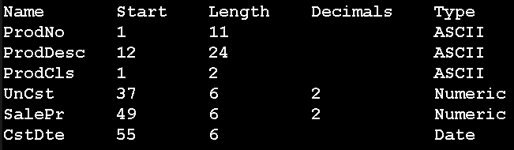

在此你將會學到:
- 匯入資料與新增Table
- 如何手動定義資料表格的欄位
- 如何新增欄位
- 如何刪除欄位
- 學會 AND 與 OR 的用法
匯入資料與新增Table
你可以參考課本 10-25 到 10-37
首先你要匯入檔案。
滑鼠移到畫面左上角
file => Open Project
檔案請選擇:
C:\ACL Data\Sample Data Files\ACL_Demo.ACL
按開啟舊檔
再來學習新增Table
看到畫面左上方
右鍵點擊Tables
new => Table
點擊下一步
點擊下一步
此時畫面會要你選擇檔案
請選擇inventory.fil
C:\ACL Data\Sample Data Files\inventory.fil
按開啟舊檔
點擊下一步
點擊下一步
此時會出現一個畫面
點擊Skip to Finish!!!
上面步驟要記得喔!!!
點擊下一步
點擊完成
點擊ok
學習定義資料表格的欄位
此時會出現一個畫面
我們來學習定義欄位吧~
這邊你可以從課本10-30開始參考
我怕我寫的不清楚~
這邊我會先以一個例子作教學
剩下的你們就都會了
活用你的左鍵
把07010434706反黑
會出現一個畫面
你會發現Start = 1
代表你從第1個字開始選
你也會發現Length = 11
代表你選了11個字
至於Name的部分請打上ProdNo
Type不須修改
因為此欄位就是字串資料型態
字串資料型態: 無法做加減運算的
操作完以上步驟後
請按左邊的綠色勾勾
接著
你會看到下面有我整理好的圖
請依此類推
那些是你等等要做的事
這邊我講幾個重要的事情:
請看該圖第五行
Decimals記得設為2
代表顯示小數點後兩位
Type記得設為Numeric
因為此欄位是數值資料型態
數值資料型態: 可以做加減運算的
第六行同理第五行
再來看第七行 (最後一行)
你會發現Type要設成Date
因為此欄位是日期資料型態
設成Date後
Format記得改成YYMMDD
Format記得改成YYMMDD
Format記得改成YYMMDD
不要選YY/MM/DD!!!
不要選YY/MM/DD!!!
不要選YY/MM/DD!!!
很重要所以講3次
Format的位置在Name的下方

你可以開始進行操作了
步驟一樣是:
1. 反黑你要的欄位
2. 輸入數字或文字
3. 按左邊綠勾勾
你可以參考課本 10-30 到 10-37
做完後，請按x離開
紅色背景的x按下去就對了
我當時也是很猶豫要不要按
怕一旦按下去資料都會不見
但按下去就對了
勇敢一點~
在此恭喜你學會定義欄位了~
學習新增欄位
我們要如何新增欄位呢?
你可以參考10-38
在畫面左上角
點擊Edit => Table Layout
你會看到你剛剛很熟悉的畫面
照著剛剛的步驟
1. 反黑你要的欄位
2. 輸入數字或文字
3. 按左邊綠勾勾
這樣就可以新增欄位
我們這邊以下面這些資料來新增:
Name : QtyOH
Start : 61
Length : 5
Decimals : 0
Type : Numeric
輸入完後，一樣按x
目前你會發現你剛剛新增的欄位
沒有出現在資料表上
是因為我們還需要再做一個動作:
首先，在你的資料表中空白處
滑鼠按右鍵 => Add Columns
會出現一個畫面
把你剛剛想新增的欄位
滑鼠左鍵點兩下
你會發現該欄位名稱會跑去右邊
按ok
新增完成
學習刪除欄位
在教學前，先說個重要的事:
欄位是可以拉動的喔!!!
只要你把滑鼠移到欄位名稱上
點擊左鍵就可以拉動該欄位了~
點擊左鍵時滑鼠會變成捏手的圖案
好的，我們開始學習刪除欄位
你可以參考課本10-40
但課本寫的並不完整
所以請看以下操作:
若你想刪除欄位
必須先刪除畫面的欄位
在欄位名稱處按右鍵
點擊 Remove Selects Columns
點擊 Remove
別太開心
別以為你刪掉了
其實這個欄位還是存在的!!!
只是你看不到!!!
接下來看到畫面左上角
點擊 Edit => Table Layout
點選欄位名稱 按右鍵
delete => delete
這邊再說一次
課本的作法
並沒有完完全全的刪除欄位喔!!!
學習 AND 與 OR
接下來請翻到3-38
我們剛剛都在學定義資料
接下來要學習比較特別的用法:
請先幫我新增一個欄位:
但這次的欄位很特別
因為需要用到運算符號!!!
看到畫面左上角
點擊Edit => Table Layout
又來到熟悉的畫面拉!
Table Layout 是我們的好朋友~
你在Name的旁邊會看到4個按鈕
請滑到第3個按鈕
Add a New Expression
點擊它
畫面會變更
接下來
Name請輸入 : Gross Margin Ratio
而Default Value請輸入:
(SalePr-UnCst)/SalePr
接著按綠勾勾
按x完成
接下來在資料表上空白的地方
右鍵新增欄位(Add Columns)
點擊Gross Margin Ratio
如此一來你將新增一個欄位
這個欄位跟前面所學習的差別是:
這個欄位裡面的資料
是經過運算而得來的
我們可以開始學習 AND 與 OR 了!
我直接舉例你們會比較懂:
例1: y>5 AND y<10
上述代表我們要搜尋的是:
同時y要大於5 並且
同時y要小於10的資料
例2: x>=0 AND x<20
上述代表我們要搜尋的是:
同時y要大於等於0 並且
同時y要小於20的資料
看完上面的舉例
你應該知道怎麼使用AND了
接下來介紹OR:
例1: y>5 OR y<10
上述代表我們要搜尋的是:
y要大於5 或是
y要小於10的資料
只要其中一個條件成立即可!
例2: x=0 OR x=10
上述代表我們要搜尋的是:
X等於5 或是
X等於10的資料
一樣，只要其中一個條件成立即可
總結:
AND是交集
OR是聯集
接下來 你們要試著練習以下題目:
請參考以下提示:
(1)日期型態 請用``
例如:
date=`20200324`
` 的名字是反單引號
也有人叫它蚯蚓號
它在鍵盤Esc鍵的下面
阿!對了!
日期在搜尋時
一律要照著下列條件:
YYYYMMDD
請記住!!!
(2)字串型態 請用""
例如:
name="Jordan"
" 的名字是雙引號
它在鍵盤Enter鍵的左邊兩格
(3)數值型態 不必加任何東西
直接使用就對了
例如:
age = 23
題目1:
請搜尋欄位為09
並且日期在8月或9月的資料
欄位: ProdCls, 日期: CstDte
ProdCls = "09" AND CstDte >= `20000801` AND CstDte <= `20000930`
題目2:
請搜尋存貨成本小於0的資料
存貨成本: InvCost
InvCost <= 0
題目3:
請找出3月或8月的資料
日期: CstDte
(CstDte >= `20000301` AND CstDte <= `20000331`) OR (CstDte >= `20000801` AND CstDte <= `20000831`)
額外筆記
筆記1
左下角的資料無法顯示?
(顯示筆數的那排)(灰色背景)
你可以參考課本 4-10 與 4-11
教學開始:
請看到畫面左上角(第4個按鈕)
點擊 Analyze => Count Records
最後點擊ok就好了~
資料就會顯示了~
筆記2
日期欄位沒出現資料?
請看到畫面左上角
點選 Edit > Table Layout
點擊CstDte，把Format改成YYMMDD
完成後點擊綠色勾勾
再按x就出現資料囉
筆記3
日期顯示的格式如何修改?
Tools > Option > Date >
Date Display Format 做更改